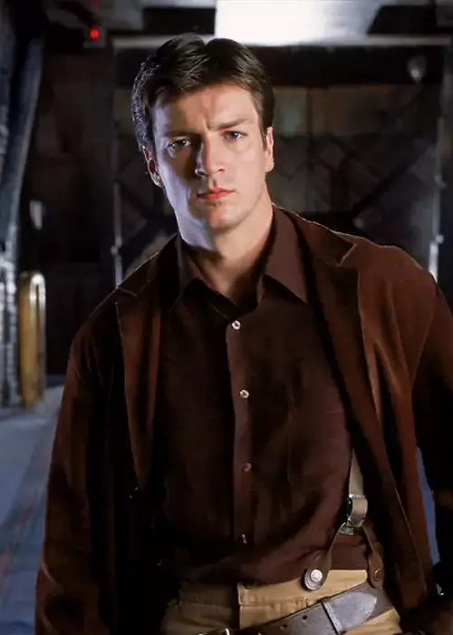
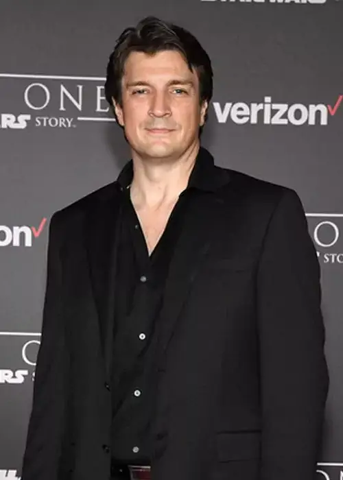

Malcolm "Mal" Reynolds
Nathan FillionNathan Fillion
Personaje: Malcolm "Mal" Reynolds
Rol: Capitán de Serenity
Nacido el 27 de marzo de 1971 en Edmonton, Canadá. Malcolm es el endurecido líder veterano de la Guerra de la Unificación. Fillion saltó a la fama mundial con este papel y posteriormente consolidó su carrera protagonizando éxitos televisivos como la serie de misterio Castle y el drama policial The Rookie (donde interpreta a John Nolan).